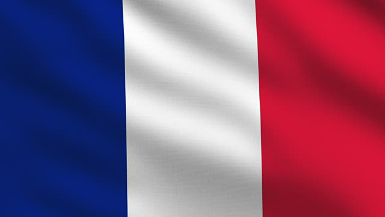

France

France is well known for its sprawling metropolitan areas; however, there is much more to the country
than what these cities hold. Imagine a lavish countryside filled with the most beautiful flowers. This
was the land that inspired many famous painters.
Cities to Explore
- Annecy
- Eguisheim
- Gordes
- Riquewihr
3 Main Attractions
- Roman Ruins at Vienne
- Quaint Forest of Vouvant
- Lavendar Fields of Provence
Let's See MORE...
Now that you've seen the lands that inspired great artists such as Degas and Monet head to Paris to
see the work.
Because You Liked This...
There are so many places to explore, but have you considered the Alps? Switch up your vacation
plans and take your next vacation to the next level in Switzerland.
The great outdoors can be peacefully explored on a trip to the serene and peaceful Greece. Think
beautiful beaches, peaceful huts, and incredible views.